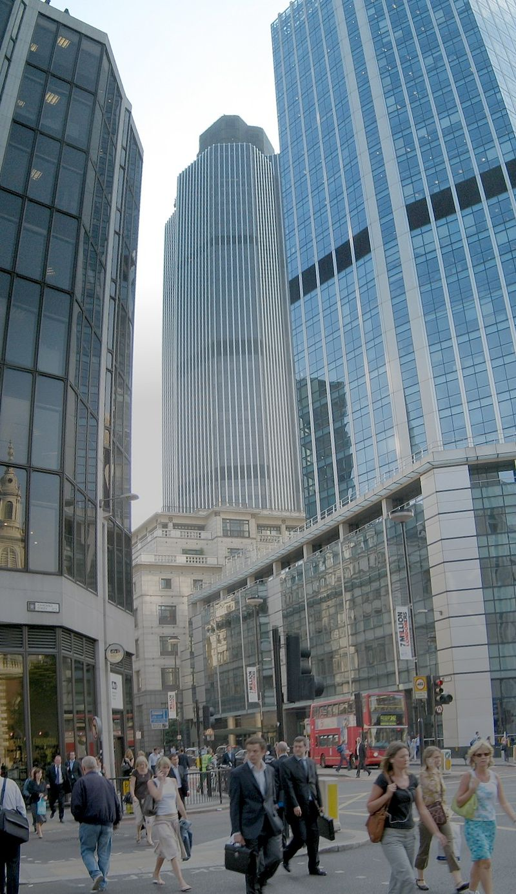

CULTURA LONDREI
Londra este un centru internațional al artelor, muzicii, muzeelor, și multor altora. Londra găzduiește cinci orchestre simfonice: London Symphony Orchestra, London Philharmonic Orchestra, Royal Philharmonic Orchestra, Philharmonia și BBC Symphony Orchestra. Principalele săli de concerte simfonice sînt Royal Albert Hall, Barbican Centre, Royal Festival Hall și Queen Elizabeth Hall. Royal Opera House din Covent Garden este casa Operei Regale și a Baletului Regal.
În Londra și-au început activitatea trupe rock celebre precum The Clash, Led Zeppelin, Sex Pistols, The Libertines, sau Pink Floyd. Săli de concerte rock celebre sunt Brixton Academy, Astoria sau Hammersmith Apollo. Londra găzduiește carnavaluri și parade celebre, cum ar fi Carnavalul din Notting Hill, sau paradele de Sfântul Patrick (17 martie) sau Sfântul Gheorghe (23 aprilie).
În Londra se găsesc peste 30 de teatre, majoritatea concentrate în West End. Cele mai multe sunt comerciale și pun în scenă musical-uri și alte piese populare. Teatre "ne-comerciale" sunt National Theatre, The Globe (reconstrucție fidelă a vechiului teatru al lui Shakespeare), Old Vic și Young Vic. Colecția națională britanică de artă occidentală veche (dinainte de 1900) este găzduită de National Gallery. Tate Modern conține colecții de artă occidentală de după 1900, iar Tate Britain găzduiește colecția națională de artă britanică. National Portrait Gallery are o colecție de portrete de personalități britanice renumite din toate timpurile.
Londra găzduiește nu mai puțin de 240 de muzee. Cele mai cunoscute sunt British Museum (antichități din toată lumea), Victoria and Albert Museum (arte decorative și aplicate), Imperial War Museum, precum și Muzeul de Istorie Naturală și Muzeul de Știință, ambele din Kensington, sau Muzeul Londrei.
Mass-media națională britanică este concentrată în Londra, și este deseori acuzată că acoperă mai bine Londra decât restul țării. Aici sunt editate toate ziarele naționale, care, până în anii 1970, își aveau sediile pe Fleet Street, rămasă celebră ca stradă a jurnaliștilor. Există trei ziare locale în Londra: Evening Standard, Metro și Standard Lite, ultimele două distribuite gratuit în fiecare dimineață în stațiile de metrou și cale ferată.
Londra este una din cele patru mari capitale ale modei, alături de Paris, Milano și New York. Supermagazine celebre ca Harrods, Selfridges sau Harvey Nichols, sunt prezente aici, alături de o mulțime de boutique-uri și magazine ale designerilor de top.
Londra a fost din evul mediu centrul vieții religioase a Regatului Unit, în ciuda faptului că primatul bisericii naționale, Biserica Anglicană, își are sediul la Canterbury. Cei doi episcopi anglicani ai Londrei sunt Episcopul Londrei, al cărui scaun este impozanta Catedrală Sf. Paul, și episcopul de Southwark, sub a cărui ascultare se află credincioșii de la sud de Tamisa. Evenimentele religioase importante au loc fie în Catedrala Sf. Paul, fie în Westminster Abbey. Catedrala catolicilor din Londra este Westminster Cathedral. Arhiepiscopul de Westminster este conducătorul catolicilor britanici. De asemenea, Londra este cel mai mare centru al Islamului în Regatul Unit; Moscheea Centrală din Londra este un obiectiv celebru la marginea parcului Regents Park. Templul hindus din Neasden este cel mai mare templu hindus din afara Indiei și un exemplu remarcabil de clădire modernă construită în stil tradițional. Peste două treimi din evreii din Marea Britanie locuiesc în Londra.